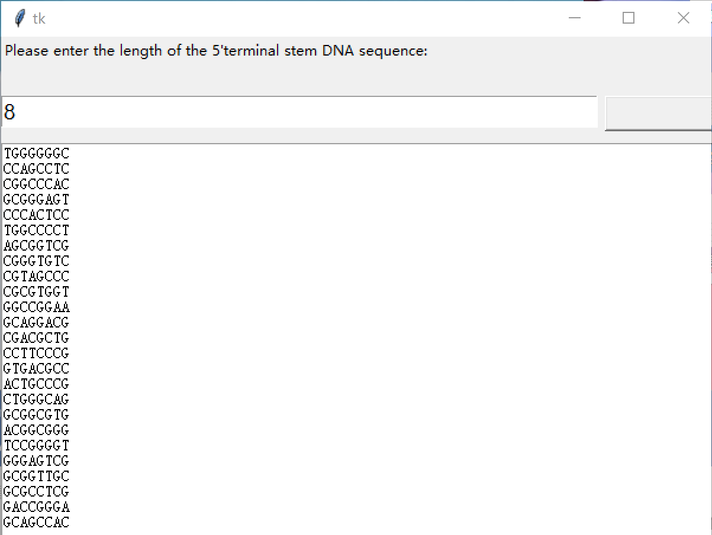

Simulation
How to get dumbbells that can hybridize with each other? We have designed a software to help us achieve the process.
Fig 1. Software designed by Team SeaSon
Enter the sequence length in the software to generate a random APP or sequence.
Fig 2&3. Generating non app or app sequences
We can select sequences from them to form DNA rings. App sequences are more inclined to generate Z-DNA, while app sequences are more inclined to generate B-DNA.

step 4&5. Generating 5’ and 3’ terminal DNA
Input the 5 'end DNA length to randomly generate a 5' end DNA sequence, and then input the 5 'end DNA sequence to obtain complementary 3' end sequences.
Fig 6. Generating palindrome sequence
The palindrome sequence enables two identical assembly components to form a dumbbell.
Fig 6. Generating palindrome sequence
Here, we have designed the second software, which inputs DNA sequences and can export simulated DNA structure diagrams to Word documents.
For example, if I input TGCATGTAAATTCCGGATAGCGTACACATATCCAATCGAGCCATGTACGTACACTACATGCACGCG
Fig 7. Software for generating simulation diagrams using input sequences
I can export the following simulation diagram：
Fig 8. Simulation diagram generated by input sequence
Now you have one of the assembly components and two of them can form a dumbbell.
Fig 9&10. Simulation diagram generated by input sequence
Fig 11. Input the sequence of the DNA loop to obtain a 180 degree complementary sequence
Repeat steps 2-4 to obtain dumbbell B that can crossbreed with dumbbell A at 180 degrees
Fig 12. Input the sequence of the DNA loop to obtain a 180 degree complementary sequence
Software download address for sequence formation：
https://drive.google.com/file/d/1hD7Biw9n456mBTm2NN4NGpX9k_kKZKWu/view?usp=drive_link
Software download address for generating simulation structure diagrams from sequences：
https://drive.google.com/file/d/1zdI2dTLybpN7Zd-boNS0C3LoWwfEUcgW/view?usp=drive_link